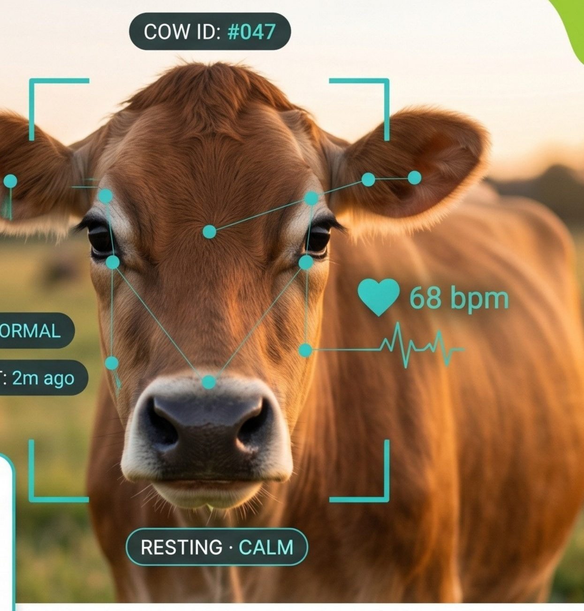

Unsere Geschichte
Aus einer Masterarbeit wurde eine Mission.
CowCare beginnt an der University of Sussex: Dort entwickelte Praveenan Mathew in seiner Masterarbeit eine KI, die Kühe zuverlässig erkennt und verfolgt — allein mit Kameras, ohne einen einzigen Sensor am Tier.
Gemeinsam mit WECONN3CT, einem KI- und Softwareentwicklungsunternehmen aus Deutschland, wurde aus der Forschungsarbeit ein echtes Produkt: ein System, das Landwirten die Augen erweitert, statt ihre Tiere zu verkabeln.
Dahinter steht eine einfache Überzeugung: Technologie soll der Landwirtschaft dienen — gesündere Tiere, weniger Antibiotika, weniger Verluste. Nicht Hightech um der Technik willen, sondern Technik im Dienst von Tier, Mensch und Umwelt.
🌱 Eine Vision aus Sussex. Ein Engineering-Rückgrat aus Deutschland. Eine Mission für die Landwirtschaft.
